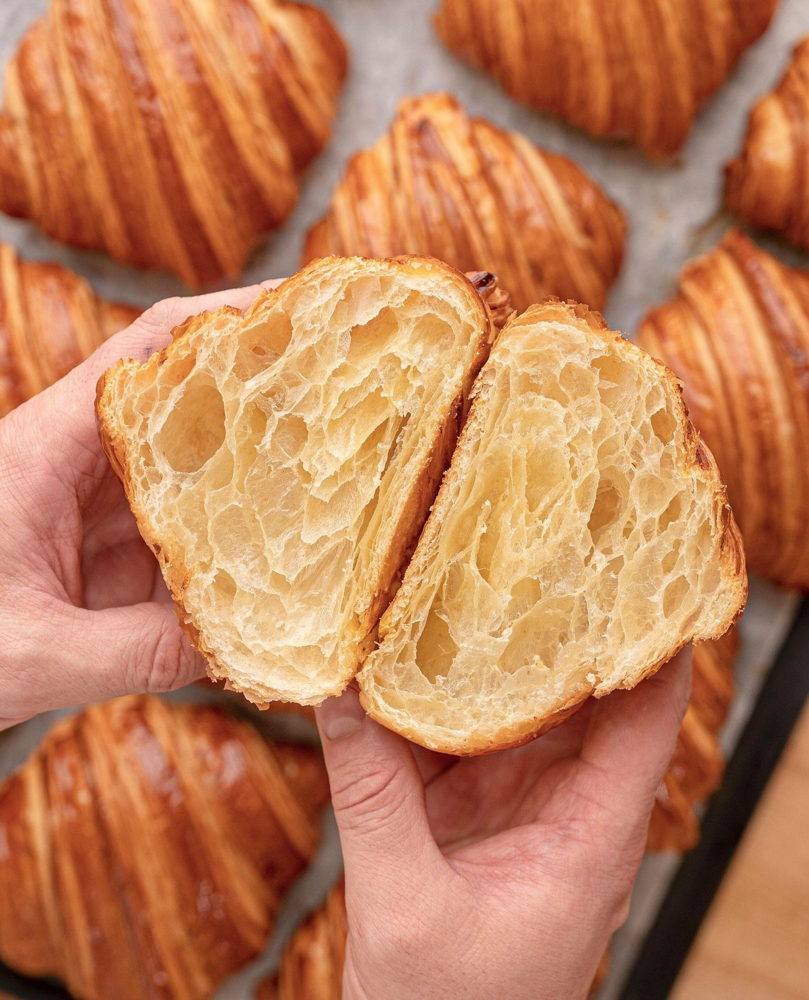
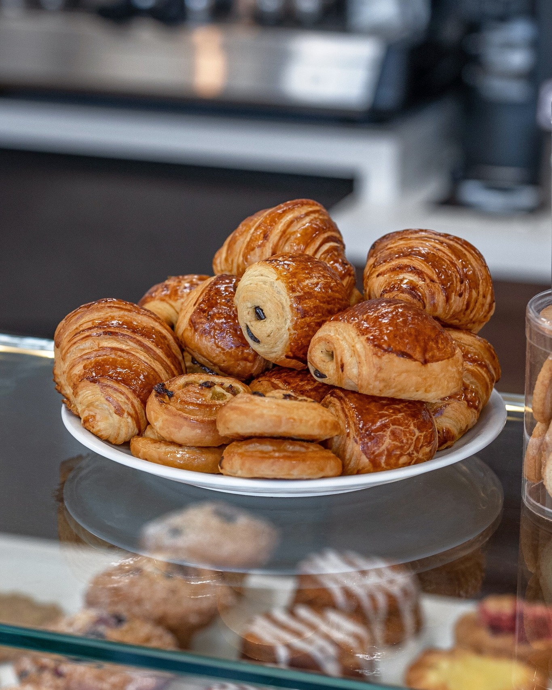
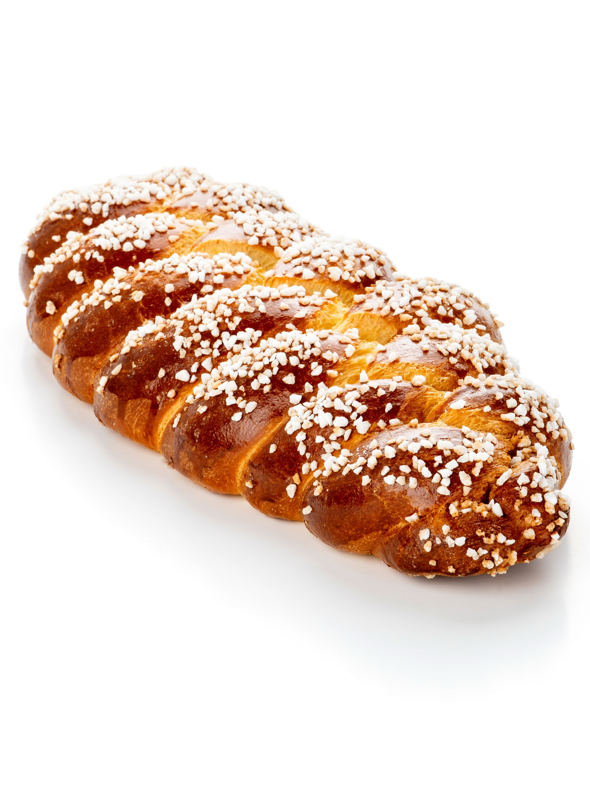

Le Croissant
Feuilleté au beurre d'Isigny, plié et reposé à la main.



Everything made from scratch, baked on site daily.
Spring Mountain · Henderson — dès 7h00
Scroll
[BREIZH] nom propre • breton, pour Bretagne
Petit lieu où l'on vient “juste pour un croissant”, avant d'en prendre un deuxième, puis une galette à partager, puis de finalement rester beaucoup plus longtemps que prévu. Endroit connu pour provoquer une augmentation soudaine de l'appétit, des “allez, encore un” et des matins qui finissent rarement à l'heure annoncée.
Synonymes : piège délicieux, bande d'amis, faim soudaine


Viennoiserie · Pas à pas
La vitrine
Feuilleté au beurre d'Isigny, plié et reposé à la main.

Croissants, amandes, cannelle — frais du four, tous les matins.

Mangue et passion, en trompe-l'œil — le dessert signature du chef.

Beurre et sucre caramélisés, tous les jours.
Il disparaît comme l'éclair — c'est son nom.
Citron, framboise, chocolat — en petites bouchées.
La carte ? Elle t'attend au café.
Le café
Installe-toi sur la terrasse, regarde les boulangers travailler derrière la vitre — le café est à quelques minutes de Downtown Summerlin.

On est ouverts ?
3555 S. Fort Apache Rd. #141, Las Vegas, NV 89147 · 702.209.3472
9550 S Eastern Ave, Suite 110, Las Vegas, NV 89123 · 725.205.1052
Pierre Gatel — boulanger de troisième génération, Executive Pastry Chef au Wynn & Encore de 2005 à 2016.
“We don't reinvent products, we make them right.”
Nous trouver
3555 S. Fort Apache Rd. #141
Las Vegas, NV 89147
9550 S Eastern Ave, Suite 110
Las Vegas, NV 89123